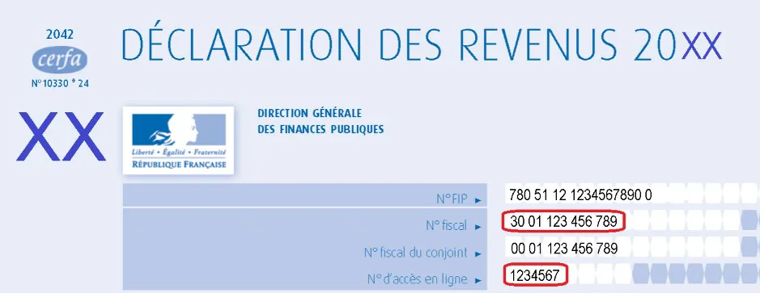
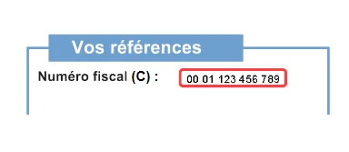
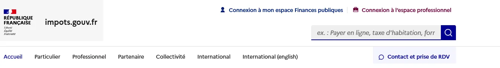
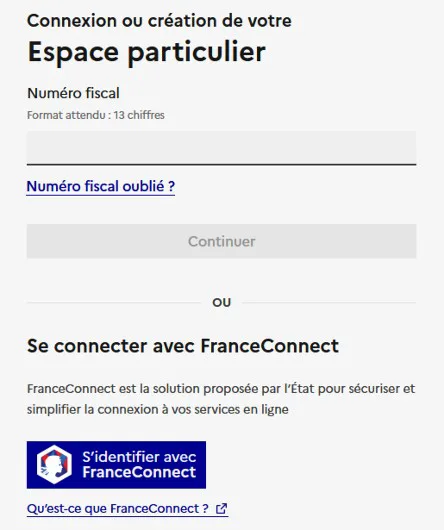
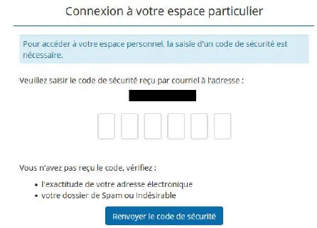
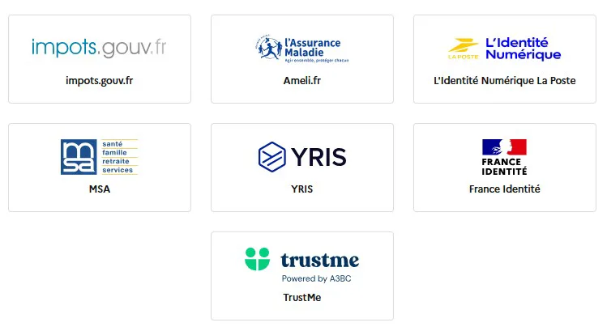
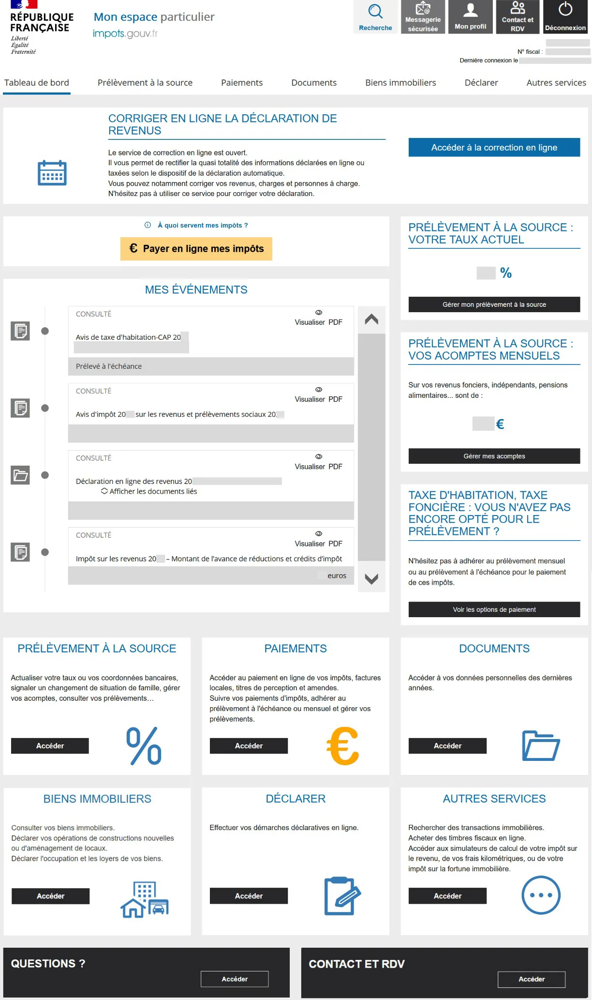

De quoi avez-vous besoin ?
Pour vous connecter à votre espace particulier, munissez-vous :
- de votre numéro fiscal (13 chiffres)
- du mot de passe choisi lors de la création de l’espace
ℹ️ Le numéro fiscal figure sur votre avis d’imposition ou votre déclaration de revenus.

Exemple d’avis d’imposition avec le numéro fiscal encadré
Accéder au site impots.gouv.fr

Ouvrez votre navigateur et allez sur www.impots.gouv.fr
Cliquez sur « Votre espace particulier » en haut à droite de la page.

Accès à la connexion de l’espace particulier
Saisir vos identifiants

Saisie du numéro fiscal et du mot de passe
Indiquez votre numéro fiscal, cliquez sur Continuer, puis saisissez votre mot de passe.
Valider avec le code de sécurité

Un code de sécurité est envoyé par email
Un code à 6 chiffres vous est envoyé par courriel. Consultez votre messagerie sans fermer la page, puis recopiez le code demandé.
Se connecter plus simplement avec FranceConnect

Connexion possible avec FranceConnect

Choisissez un compte existant (Ameli, La Poste…)
FranceConnect permet de vous connecter avec un compte que vous utilisez déjà, sans mémoriser de nouveaux identifiants.
Une fois connecté

Tableau de bord de votre espace particulier
Vous accédez alors à l’ensemble de vos services en ligne : documents, paiements, messagerie sécurisée et démarches.
← Retour aux tutoriels